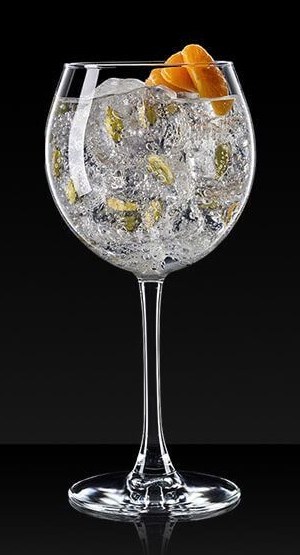

Gin Tônica

Ingredientes:
60 ml de gin
120 ml de água tônica
Gelo
Fatia de limão ou outra fruta cítrica para decorar (opcional)
Modo de preparo:
Encha um copo alto com gelo.
Adicione o gin sobre o gelo.
Complete o copo com água tônica, despejando-a suavemente para evitar que as bolhas se dissipem rapidamente.
Mexa delicadamente com uma colher longa para misturar os ingredientes.
Decore o copo com uma fatia de limão ou outra fruta cítrica de sua preferência, se desejar.
Sirva imediatamente e desfrute do seu Gin Tônica refrescante!
O Gin Tônica é um coquetel bastante versátil, e você pode personalizá-lo adicionando ingredientes extras, como fatias de pepino,
folhas de hortelã, bagas de zimbro ou outras especiarias de sua preferência. Experimente diferentes combinações para encontrar o
seu sabor favorito. Aprecie o seu Gin Tônica!